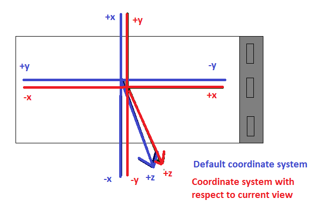

Mobile Development and 3D Graphics - Part 5
Android Sensors
Android Sensors - Introduction
- Android has a Sensor API which can be used to query
various sensors on the device
- Sensors are items of hardware on the device and include:
- Accelerometer: detects acceleration in the three axes of the device
- Magnetic field sensor: detects the Earth's magnetic field
- Light sensor
- Temperature and pressure sensors
- External sensors can also be attached, e.g. environmental sensors (to measure pollution)
- The Sensor API can be used with each type of sensor
Using the Sensor API
To use the Sensor API, we:
- Obtain a
SensorManager using a given Context (e.g. Activity)
-
val sMgr = getSystemService(Context.SENSOR_SERVICE) as SensorManager
- Obtain a given
Sensor (the accelerometer in this example)
val accel = sMgr.getDefaultSensor(Sensor.TYPE_ACCELEROMETER)
- Register a
SensorEventListener object with the sensor manager. This is an object
implementing the SensorEventListener interface.
sMgr.registerListener(sensorEventListener, accel, SensorManager.SENSOR_DELAY_UI)
- Implement these methods in the SensorEventListener object:
onAccuracyChanged(sensor: Sensor, accuracy: Int) - is called if the sensor accuracy changes, often left blankonSensorChanged(ev: SensorEvent) - this is fired whenever the sensor's state changes, e.g. the phone is tilted or pointed in a different direction - In
onSensorChanged() the new values of each sensor can be obtained as follows using the
SensorEvent object, ev.
- Using the
SensorEvent's "sensor" attribute we can obtain the Sensor which caused the event. This is useful
because frequently, the same SensorEventListener listens out for events from different sensors.
Example of setting up the Sensor API
Here is a code extract showing the use of the previous API calls.
class SensorActivity: AppCompatActivity(), SensorEventListener {
lateinit var accel: Sensor
override fun onCreate(savedInstanceState: Bundle?) {
super.onCreate(savedInstanceState)
val sMgr = getSystemService(Context.SENSOR_SERVICE) as SensorManager
accel = sMgr.getDefaultSensor(Sensor.TYPE_ACCELEROMETER)
sMgr.registerListener ( this, accel, SensorManager.SENSOR_DELAY_UI )
}
override fun onAccuracyChanged(sensor: Sensor, accuracy: Int) {
}
override fun onSensorChanged(ev: SensorEvent) {
// Test which sensor has been detected.
if(ev.sensor == accel) {
// handle the accelerometer sensor
}
}
}
Accelerometer
Ref: Chapter 29 of "Pro Android 4" (Komatineni and MacLean)
- The accelerometer measures the acceleration in the three axes of the phone.
The phone's "inherent" axes are, in portrait:
- x horizontal
- y vertical
- z up
(see Pro Android 4, p.843, Fig 29-2)
- Acceleration is measured in metres-per-second squared, i.e. m/s/s. Acceleration is the gain or loss
in velocity (which is measured in metres per second) per second.
- The Sensor API allows us to query the accelerometer to find the acceleration in each of the three axes of the device.
It should be pointed out that the
device has a default orientation, which is lying flat in portrait mode. In
this orientation:
- the x coordinate represents the "short" axis of the device (i.e. along the
bottom in portrait mode);
- the y coordinate represents the "long" axis of the device (i.e. along the
side in portrait mode);
- the z axis "passes through" the device from above to below.
- This diagram shows the default coordinate system used by the device, indicating the x, y and z axes.

- In
onSensorChanged() with the accelerometer,
the "values" attribute of the SensorEvent, i.e. ev.values, is an array of 3 values representing the sensor values in each of the 3 axes x, y and z.
Effect of gravity
- The z axis in this default orientation is subject to the effect of gravity.
- Gravity is taken into account when measuring the vertical motion. The idea is to factor out the effect of gravity so that the acceleration measured is the acceleration without the effect of gravity, so that any acceleration measured is due to other factors.
- For example, the vertical motion when the device is dropping is 0 m/s/s because the motion is wholly down to the effect of gravity, and not any other forces. The actual acceleration is 9.81m/s/s (i.e. the gravity constant "g")
but is measured using the Sensor API as -9.81 (downwards motion hence negative) +9.81 (acceleration due to gravity)
= 0.
- When the device is at rest the actual acceleration is 0 but the recorded acceleration is gravity i.e. 9.81m/s/s. This can be seen as representing the fact that there is resistance against gravity because the device is resting on a surface.
Effectively there is a force upwards of 9.81m/s/s on the device.
Magnetic field sensor
- As well as the accelerometer there is the magnetic field sensor (see Pro Android 4, p.849).
-
This detects the magnetic field in the three axes of the phone, including the Earth's magnetic field (which
can help us find north)
- However it is highly sensitive to other magnetic fields near the phone and will only
work if the device is held flat - not much use for a real-world compass. (Pro Android 4, p849)
- These raw magnetic field values are therefore of not much use on their own.
Combining accelerometer and magnetic field values
- Firstly, include two arrays as attributes in the
SensorEventListener object, one for the accelerometer values, one for the magnetic field values.
- When a new reading is received, store the new values in the appropriate array depending on the value given by
ev.sensor in
onSensorChanged()
- We then need to combine the accelerometer and magnetic field values to obtain the rotation of the device. The Sensor API comes with a built-in method call to calculate a rotation matrix representing the rotation of the device
from its default position (lying flat in portrait mode). (A rotation matrix is a 4x4 "grid" of numbers which represents the current rotation of the device: we will return to matrices when we look at OpenGL, later). This is
SensorManager.getRotationMatrix (orientationMatrix, inclinationMatrix, accelerometerValues, magneticFieldValues)
This matrix is very useful for 3D rendering, for example in an augmented reality app, as it allows us to match up computer-generated content with the real world, as displayed through the camera feed. When we look at OpenGL, we will see how we can use the rotation matrix to achieve this.
orientationMatrix should be a 16-member array (initially empty); it will later be filled with the 4x4 orientation matrix. inclinationMatrix is not important in most cases, so you can just pass in null.- Example of creating an array of a particular size in Kotlin:
val orientationMatrix = FloatArray(16)
- Once you have this matrix, you can get the device's orientation in the three axes, very useful if you need to develop a compass app for example.
SensorManager.getOrientation (orientationMatrix, orientations)
orientations is an array containing the orientation of the device in the three axes of the device, covered in more detail below.
Components of the orientations array
The three components of the orientations array are:
- the azimuth. This is the rotation about the device's default z axis, i.e the axis going throught the device and pointing upwards
and downwards. Thus the azimuth can be used to give us a compass bearing (0 is defined as North).
- the pitch. This is the rotation about the device's default x axis, i.e the axis going along the bottom of the device in
portrait mode. Thus the pitch represents the extent to which the device is "standing up" or "lying flat". If you lie the device
flat, the pitch will be 0. Pointing it upwards will reduce the pitch to -PI/2 radians (-90 degrees) while pointing it downwards will increase it to
PI/2 radians (90 degrees).
- the roll. This is the rotation about the device's default y axis, i.e. the axis going along the side of the device in
portrait mode. Thus the roll can be varied by rolling the device (as the name suggests), e.g. tipping it on its side. If you tip
it clockwise so it's resting on its right-hand side in portrait mode, the roll will increase to PI/2 radians (90 degrees). If you tip it anticlockwise so
it's resting on its left-hand side in portrait mode, the roll will decrease to
-PI/2 radians (-90 degrees).

Coding an app to get the device's orientation using both sensors
How should this be coded? The simplest way is to have ONE listener for BOTH the accelerometer AND the magnetic field sensors, which includes logic to determine which sensor has been detected. In this method we:
- work out which sensor is detected;
- store the values in an appropriate array. We should have two arrays, as attributes of our listener class, one for accelerometer and
one for magnetic field.
- call SensorManager.getRotationMatrix() to fill the orientation matrix (another attribute of the listener class) with the raw sensor values.
- Finally, call SensorManager.getOrientation()
Template example showing general logic of application
to calculate the orientation (incomplete!)
In the exercises, you ned to complete this!
class SensorActivity: AppCompatActivity(), SensorEventListener {
lateinit var accel: Sensor
lateinit var magField: Sensor
// Arrays to hold the current acceleration and magnetic field sensor values
var accelValues = FloatArray(3)
var magFieldValues = FloatArray(3)
override fun onCreate(savedInstanceState: Bundle?) {
// TODO
}
override fun onAccuracyChanged(sensor: Sensor, accuracy: Int) {
// Leave blank
}
override fun onSensorChanged(ev: SensorEvent) {
// Test which sensor has been detected.
if(ev.sensor == accel) {
// Copy the current values into the acceleration array
accelValues = ev.values.copyOf()
} else if (ev.sensor == magField) {
// TODO ... do the same for the magnetic field values (not shown)
}
// TODO Calculate the matrix.
// TODO Get the orientations.
}
}
Other sensors
Other sensors use the same Sensor API. For example, you can use the Sensor API to obtain the light level (in lux), the air temperature (in Celsius), and air pressure (in millibars). In all cases, you obtain the reading via the first member of the values array, e.g. ev.values[0]. See here.
Remapping the coordinate system
Virtual and augmented reality are common applications of the sensors. In a virtual-reality environment, the device's screen shows
a computer-generated representation of the world around you, e.g. a rendering of roads, parks, buildings, hills and so on.
In augmented reality, computer generated features (e.g. roads and points of interest) are overlaid on the device's camera view.
In both cases (and particularly augmented reality) you'll want the display on your device to align with where you are facing in the real
world. This will work in portrait mode without any further action as the axes of our current view of the phone align with the device's
standard coordinate system. However in landscape mode there is a mismatch between the device's default coordinate system and
our current view of it. This will cause problems if we want to draw on the screen, as coordinate systems for drawing (e.g OpenGL) are always
relative to the CURRENT VIEW of the device. In landscape mode:
- the "x axis" appears to be the long edge of the phone;
- the "y axis" appears to be the short edge of the phone;
- the z axis still goes through the device, up and down.
However this mismatches with the device's default coordinate system:
-
the apparent "y axis" in landscape is actually the x axis in the default coordinate system, though it does
increase bottom to top
- the apparent "x axis" in landscape is actually the y axis in the default coordinate system, and furthermore
y (as measured in the default coordinate system) decreases left to right.
Therefore we need to remap the coordinate system so that:
- x coordinates in the default system become y coordinates in landscape
- y coordinates in the default system become x coordinates in landscape, AND the sign changes.
We can achieve this through SensorManager.remapCoordinateSystem(). This remaps the rotation matrix (from
SensorManager.getRotationMatrix()) to work with the device's current view. We need a new array for the remapped matrix.
To remap from portrait to landscape we would do:
SensorManager.remapCoordinateSystem (originalMatrix, SensorManager.AXIS_Y, SensorManager.AXIS_MINUS_X, remappedMatrix)
-
The 2nd parameter describes what axis in the default orientation the device's current
x axis (in the device's current orientation) corresponds to. So in landscape, the x axis corresponds to the y axis in the default orientation (SensorManager.AXIS_Y.
-
The 3rd parameter describes what axis in the default orientation the device's current
y axis corresponds to. So in landscape, the y axis corresponds to the negative x axis in the default orientation (SensorManager.AXIS_MINUS_X).
The remapping is shown below.

How to determine the current rotation of the device?
Ideally what we want is for our app to work not just in portrait and landscape, but
also "upside-down portrait", with the normal bottom of the phone at the top and
vice-versa, and "upside-down landscape", with the normal bottom of the phone on the left
(rather than on the right). How do we do this? We can obtain the current rotation of
the device using a WindowManager object. Here is how we do this:
Smoothing the sensors
You'll probably find the sensors are very "jittery" and change very rapidly. It is worth carrying out a process known
as exponential smoothing to reduce the jitter.
To do this, when we get a new value from the sensor (obtained from ev.values in onSensorChanged()) we store,
not the raw value, but the value multiplied by a *smoothing factor* plus the *previous value* multiplied by
1 minus the smoothing factor. In other words if *k* is the smoothing factor:
stored value = raw value*k + previous value(1-k)
Typically k is a small value (e.g. 0.05 or 0.075) (original refs below, but no longer available):
- Haseman, C. (2009) "Augmented Reality on Android: Using GPS and the Accelerometer" (online), Available formerly at:
http://www.devx.com/wireless/Article/43005/0/page/2
- Andreasson, M. (2010) "Technical: Orientation sensing in Photos Around" (online), Available formerly at:http://photosaround.mandreasson.com/2010/05/technical-orientation-sensing-in-photos.html
so the previous value will count for significantly more than
the new value. The previous value will itself be influenced by previous values, so a series of consistent values
will count more than a wildly different value. Hence the readings are smoothed out as "noise" counts for less
than consistent readings.
Exercise
- Create an app which has three TextViews representing the acceleration in the
three axes of the phone/tablet. Make the Activity act as a SensorEventListener and set up the SensorEventListener in onCreate(). In your onSensorChanged(), update the three TextViews to hold the acceleration in the three axes. Your activity will need a float array (3 member) to hold the acceleration in the three axes. Put your phone/tablet flat on a surface in portrait mode and see what values you get. Rotate your phone/tablet so it's standing up in portrait mode. Now which value reads approximately 9.81? Why? Finally rotate your phone/tablet so it's standing up in landscape mode. Again, now which value reads approximately 9.81 and why?
-
Unfortunately it is difficult to test out applying forces to the sides of the
phone/tablet e.g. pushing it to the left and right or forwards and backwards while it is lying on a surface, because the values change too quickly.
- Combine the accelerometer and magnetic field sensors, as discussed in the
lecture notes for this week and using the code example above to get started. You'll need to register both sensors, and make your onSensorChanged() handles both sensors. As shown in the lecture notes, copy the sensor values into the appropriate array (either the accelerometer values array or the magnetic field values array) and then calculate the rotation matrix. From the rotation matrix, calculate the orientations (azimuth, pitch and roll). Create three more text views to hold the azimuth, pitch and roll.
- Try rotating the device in different ways, e.g. rotating it while flat, "pitching" it up and down and "rolling" it on its side. You will need to declare float attributes for the orientations (azimuth/pitch/roll) (float array, 3 values for azimuth, pitch, roll respectively) and for the rotation matrix (a 16-member float array).Try running the app in landscape mode versus portrait. What happens when in landscape? Can you see why?
- More advanced: develop a compass app which shows which direction we are facing (N, NE, E, SE, S, SW, W or NW). Do this by working out what bearing each of the 8 compass points corresponds to, and then find which is closest to the azimuth.
- Advanced exercise: develop a simple light-sensitive torch.
Here is some code to get you started, showing how to turn the torch on and off (using the camera flashlight). This code assumes the user is pressing "on" and "off" buttons. However you should adapt it to turn the torch on if it's off and at least 10 readings of 5 lux or less are received, and turn it off if it's on and at least 10 readings of more than 5 lux are received.
import android.content.Context
import android.hardware.camera2.CameraCharacteristics
import android.hardware.camera2.CameraManager
import androidx.appcompat.app.AppCompatActivity
import android.os.Bundle
class MainActivity : AppCompatActivity() {
var cameraId: String? = null
override fun onCreate(savedInstanceState: Bundle?) {
super.onCreate(savedInstanceState)
setContentView(R.layout.activity_main)
// Get the CameraManager object
val cMgr = getSystemService(Context.CAMERA_SERVICE) as CameraManager
// filter the list of device cameras depending on whether flash is available
val cameras = cMgr.cameraIdList.filter { cMgr.getCameraCharacteristics(it).get(CameraCharacteristics.FLASH_INFO_AVAILABLE)}
// If there was a suitable camera...
if(cameras.size > 0) {
cameraId = cameras[0] // select the first camera with flash (arbitrarily)
// Find on/off buttons using their ID
val torchOn = findViewById<Button>(R.id.torchOn)
val torchOff = findViewById<Button>(R.id.torchOff)
// Add click listeners to both. We call the CameraManager's
// setTorchMode() method, using the chosen camera, and passing in
// true or false respectively.
torchOn.setOnClickListener {
if(cameraId != null) {
cMgr.setTorchMode(cameraId, true)
}
}
torchOff.setOnClickListener {
if(cameraId != null) {
cMgr.setTorchMode(cameraId, false)
}
}
}
}
}